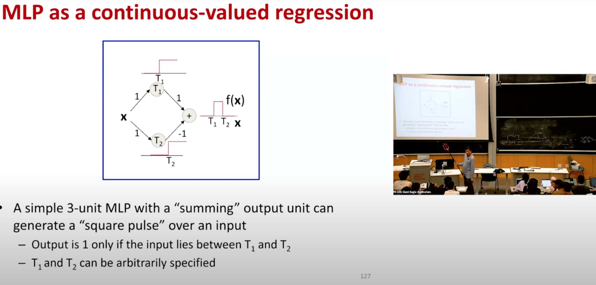
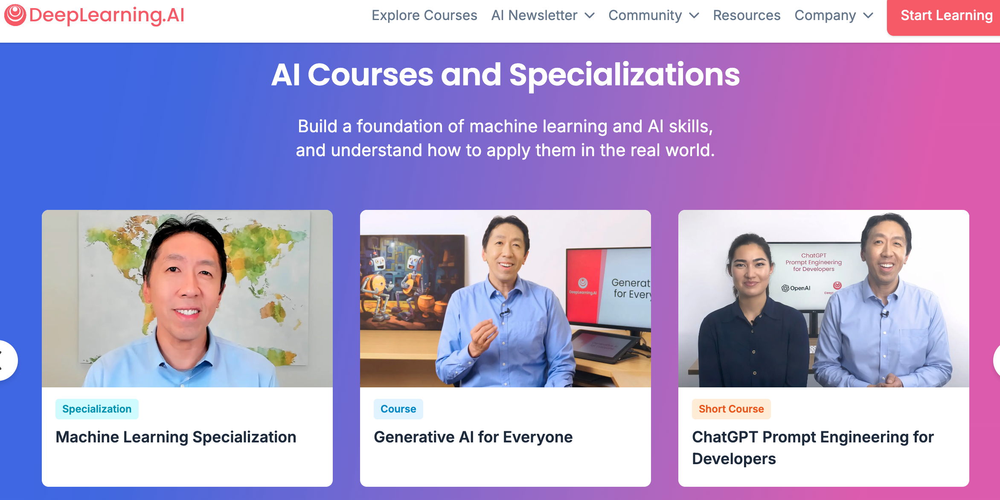
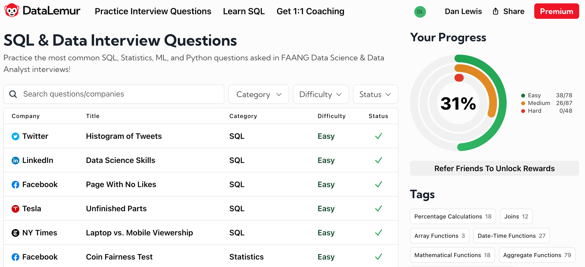
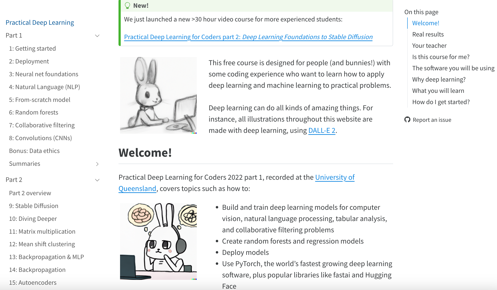
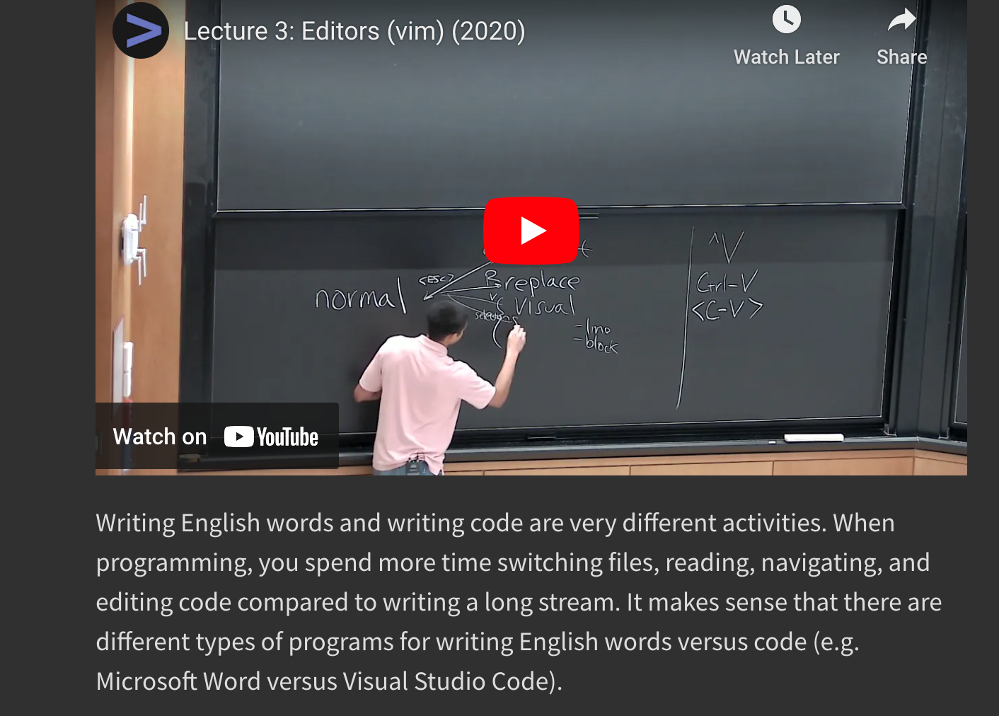

Hello and welcome to this first blogpost, in which I aim to highlight five of the best resources that I have been using since August in my bid to review Machine Learning fundamentals and prepare for an industry role in Data Science.
My hope is that you find these sites helpful too, and can get going with them with the minimum of fuss, given your advanced background.
So, in no particular order:

Hat-tip (h/t) to Ivan at Meta for pointing me in the direction of this course, which provides a thorough introduction to Deep Learning, starting with the Multi Layer Perceptron (MLP) architecture and including Convolutional and Recurrent Neural Networks (CNNs and RNNs), as well as more modern architectures like the Transformer that underpins Large Language Models (LLMs).
One thing I really like about this course (and this will come as no surprise to those of you who know me well!) is the inclusion of historical context to motivate the theory discussed. For instance, Prof Raj highlights and links to a paper regarding Alan Turing, which describes how Turing laid the theoretical groundwork for the MLP and neural networks as we know them today.
Another thing I like about this course is the attention to detail on the slides, which I am sure to review when I come to implement the algorithms presented. Moreover, the course includes a number of challenging homeworks, which allow you to rebuild PyTorch from scratch and work with phoneme (voice) data.
All in all, a great starting point for Deep Learning (assuming knowledge of basic Python, which you can pick up from, e.g., DataCamp or free alternatives)!

H/t to Gavin at Purple.ai for this one. Prof Andrew Ng has put together a wealth of online courses focused solely on topics within Deep Learning, and these are offered via Coursera for certification (or you can trial/audit for free).
First I audited the Machine Learning in Production short course, and very much enjoyed Prof Ng’s clear explication, including practical topics like how to appropriately define a baseline for your model’s performance.
I subsequently audited the Generative AI with LLMs short course, which gently introduced me to topics like Reinforcement Learning with Human Feedback (RLHF), going some way beyond instruction fine-tuning to optimize your output when you interact with LLMs.
Most recently, I enrolled in the Generative Adversarial Networks (GANs) specialization, in which Dr Sharon Zhou showcases her expertise, guiding the student through the theory of this modern architecture. I found it fascinating to learn of the necessary symbiotic relationship between the generator and the discriminator, which must be trained simultaneously if the network is to have any hope of learning.
A great number of pre-coded workbooks (the assignments require filling gaps – not always straightforward!) are provided to paying students, and these go as far as powerful recent models like StyleGAN. I also very much appreciated the focus on Data Ethics, which is vital when it comes to a topic such as this, with the potential for vile misuse via Deepfakes.
If you have completed or are close to completing grad school, you may find the material and exercises at times straightforward, for it is aimed at a general audience, but a great many research papers are linked to (in addition to the included workbooks), so there is much to explore in as much depth as you should wish.
Again, I consider this an excellent collection of resources, and the GANs specialization was well worth the monthly fee (which handily cancels automatically when you have completed the specialization)! :)

H/t to Conrad at Microsoft for this one, or rather for introducing me to Nick Singh’s book with Kevin Huo, of which this website is a spin-off.
You’re probably familiar with LeetCode, the test-prep app for software engineers. It’s so well-regarded as to have become a verb: “to leetcode” in advance of an interview, or for daily practice. In my experience, the LeetCode platform is indeed very useful when preparing for a coding test, but is less useful as a day-to-day tool, particularly for data scientists and aspirants. While LeetCode is well-populated with Python challenges, and comes with a very nice integrated development environment (IDE), it does not, at least at the time of writing, provide much if anything by way of practice in writing SQL queries.
Enter DataLemur: like LeetCode, but for SQL. It’s aimed at data scientists and analysts preparing for interviews, rather than software engineers. And while it’s interface may not be as glitzy as LeetCode’s, and it may contain a few more bugs than would be ideal, it nicely fills the gap that LeetCode has left open, allowing you to practice SQL queries to your heart’s content (unless you should run out of practice questions, but by then you will be well on your way to mastery).
I appreciate the hints that appear on the left-hand panel. These are particularly helpful when you are first getting started, and are unsure how to approach a problem: perhaps you are new to SQL? The website also includes SQL tutorials covering basic, intermediate and advanced commands, which help you get off the ground. But I would certainly advocate learning SQL by writing SQL, and using the hints and tutorials as fallbacks when you get stuck, not as crutches.
I hope you’ll forgive my relentless positivity in this post, but knowing full well that I’m repeating myself, I find this to be another great resource. I hope you’ll also forgive me for including this link, by which if you sign up, we might both get access to bonus questions and “exclusive prizes”!

In some ways, fast.ai’s courses are the antithesis of what I have in mind with this blog. That is, their goal is to democratize AI, helping those without fancy PhDs to gain confidence in ML, and getting your hands dirty from lesson 1. This is indeed an admirable goal, and one I’m certainly not averse to! I’m just coming at things from a slightly difference perspective, with a somewhat different audience in mind, but I do think there is a LOT that my target audience can nonetheless take from working through fast.ai’s courses (and h/t to Nick at Purple.ai for putting me on to fast.ai).
Let me focus on just some of the things I love about fast.ai:
Their pedagogy. The instructor Jeremy Howard references (amongst other texts) Lockhart’s “A Mathematician’s Lament”, which I first came across when I was teaching high school. Lockhart laments the school mathematics curriculum’s typical focus on mechanical operations, without relevant context – like learning only the notes to a concerto, but never hearing the music. With this in mind, the solution is to provide context first – in the case of fast.ai, to go straight in at the deep end training neural nets – before figuring out thereafter what it all means. I think this is a smart way to go, and it reminds me very much of Gowers’s advice to present examples first.
The pace. Within 8 lessons, you have a complete introductory course on Deep Learning for beginners. While this first course does not go into nearly as much depth as CMU’s, the second course goes beyond it, exploring stable diffusion in significant depth. Again, I appreciate the inclusion of Data Ethics, and would advise you to watch Dr Rachel Thomas’s bonus lesson in full.
The asides and tidbits. As well as covering the content, Jeremy takes the viewer along for so much more. How should you provision your IDE? What are tips and tricks for working most efficiently in Jupyter notebooks? What other resources should you be aware of (and I am very glad this includes all the relevant research papers)? This fast.ai course is a treasure-trove of valuable “things you ought to know but no-one ever told you”, and it’s worth following along in full to get a sense of these.
A top resource. Yes, it’s aimed at a more-general audience, but it’s well worth your taking a look at. Pick up the tips and tricks, and delve deep into the research papers cited. A fast way to learn, for sure (but I must admit I’ve not yet been fully evangelised to try to win kaggle competitions)!

H/t to Jeremy at fast.ai for letting viewers know about this.
This sequence of lectures was hosted by the MIT Computer Science department, and entirely student-led. The students seek to fill the missing gaps in a typical CompSci education. Like me, you probably haven’t studied CS formally, but perhaps taken the occasional class whether in person or online. Nonetheless, I hope that you, like me, find these lectures useful, for they do indeed cover all the things you feel you ought to know in order to be more efficient in using your computer, but no-one ever told you!
For example, they start by running through command line prompts and how these can be piped together. I became familiar with a lot of these tools when I was studying for my MSc, but unless you use them regularly, you lose them, so I was very glad of a recap.
Later classes include the use of text editors (with a focus on vim) and git. I must now humbly concede my debate with Alex from UA Math, who tried to inform me of the advantages of emacs without ever convincing me. I’m now a vim convert (indeed, typing this blog in vim…), and happy to steer clear of the vim vs emacs war that rages on.
I like that each lecture in the series comes accompanied with exercises for the user to practice the skills learned. The pace of class is fast, so you have to be prepared to be thrown in at the deep end, knowing you may review unfamiliar concepts further on your own time.
All credit to the students at MIT who put this together. Check it out!
That’s it for now. I hope you enjoyed reading this first blogpost. Please let me know via social media if you have.
NOW READ:
Ian Hogarth’s essay on what it will take for Europe to build a trillion dollar start up
The US AI Safety Institute’s Pre-Deployment Evaluation of OpenAI’s o1 Model